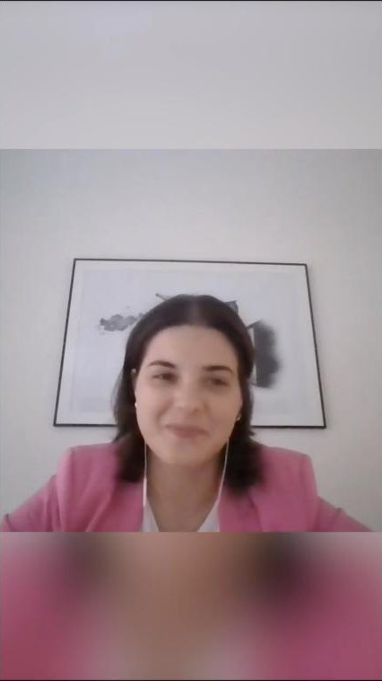
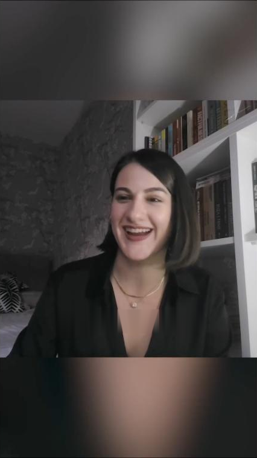
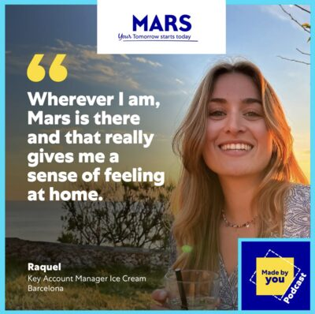

The work
07 / 07
A few frames
from the launch.
Trailer

Social cut

Social cut
Reels
Social cuts
← Tap a reel to watch

Quote card
Posts
Quote cards
← Tap a post to open
Full episodes
Listen on Spotify